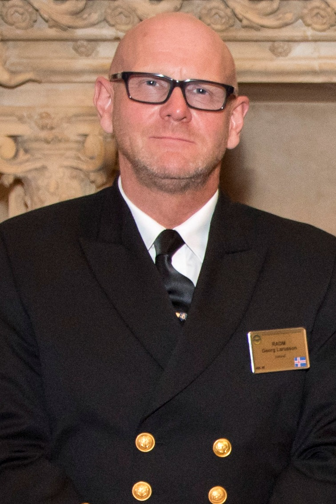
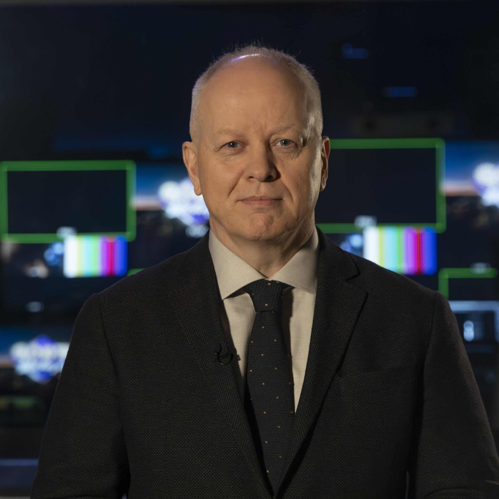
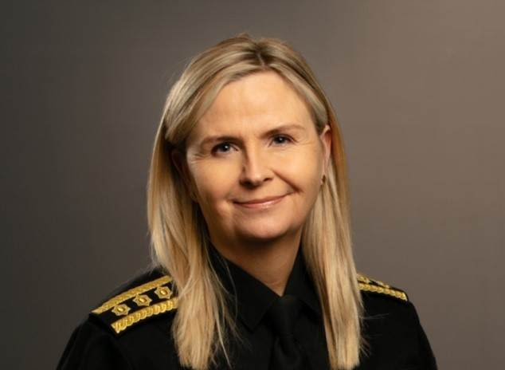
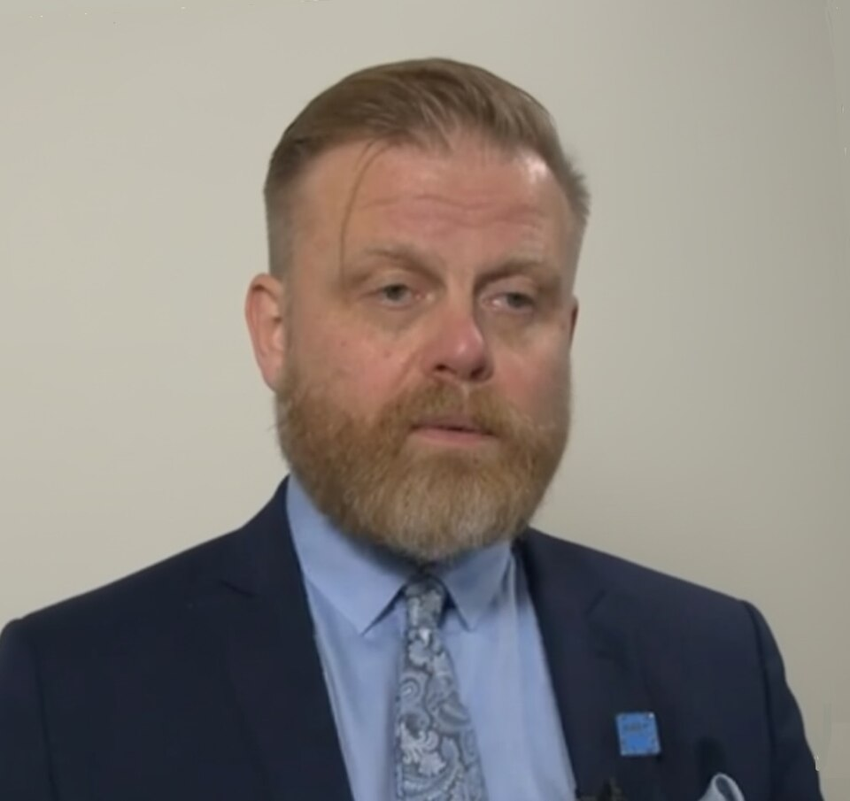
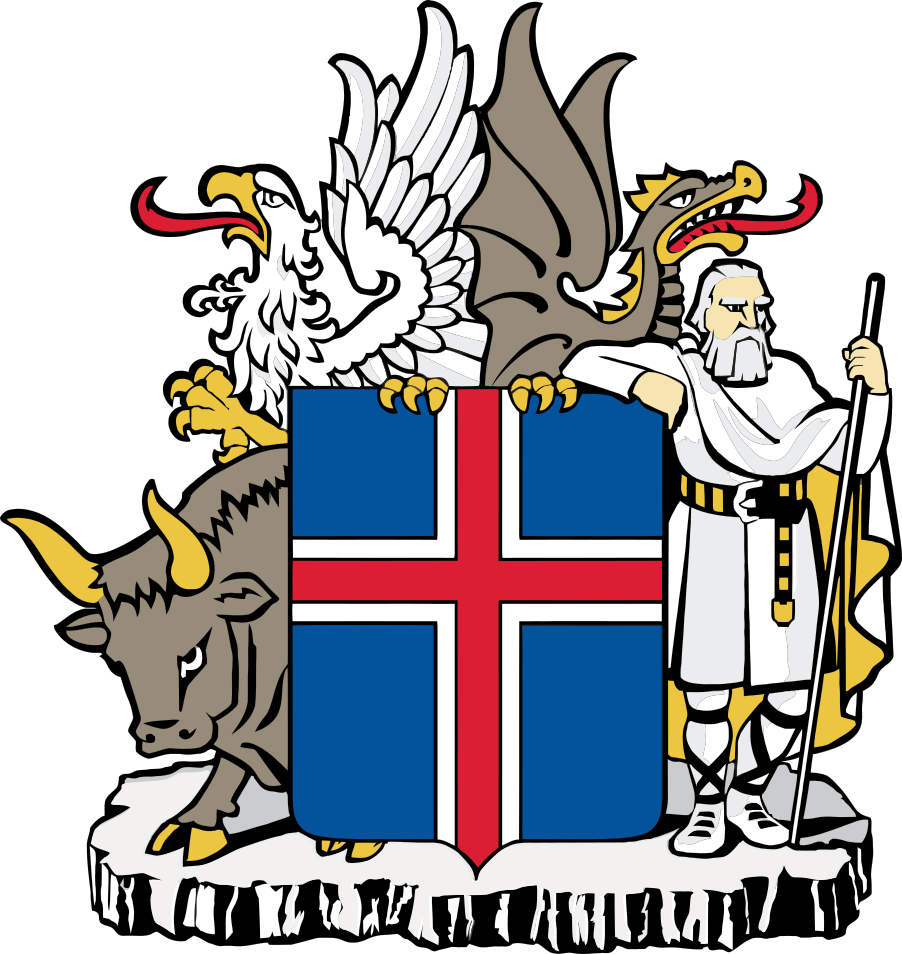

Hver er?
1. Hver er forstjóri Landspítala?
Svar
Runólfur Pálsson
2. Hver er ríkisskattstjóri?
Svar
Snorri Olsen
3. Hver er forstjóri Landhelgisgæslu Íslands?
Svar

Georg Kr. Lárusson
4. Hver er útvarpsstjóri?
Svar

Stefán Eiríksson
5. Hver er umboðsmaður barna?
Svar
Salvör Nordal
6. Hver er forseti Hæstaréttar?
Svar
Benedikt Bogason
7. Hver er ríkislögreglustjóri?
Svar

Halla Bergþóra Björnsdóttir
8. Hver er umboðsmaður Alþingis?
Svar
Kristín Benediktsdóttir
9. Hver er forstjóri Samkeppniseftirlitsins?
Svar
Páll Gunnar Pálsson
10. Hver er ríkissaksóknari?
Svar
Sigríður J. Friðjónsdóttir
11. Hver er seðlabankastjóri?
Svar

Ásgeir Jónsson
Hjá hvaða stofnun? Hvaða embætti?
12. Hjá hvaða stofnun er Runólfur Pálsson forstjóri?
Svar
Landspítali
13. Hjá hvaða stofnun er Snorri Olsen ríkisskattstjóri?
Svar
Skatturinn
14. Hjá hvaða stofnun er Georg Kr. Lárusson forstjóri?
Svar
Landhelgisgæsla Íslands
15. Hjá hvaða stofnun er Stefán Eiríksson útvarpsstjóri?
Svar
RÚV
16. Hvaða embætti gegnir Salvör Nordal?
Svar
Umboðsmaður barna
17. Hvaða embætti gegnir Benedikt Bogason?
Svar

Forseti Hæstaréttar
18. Hvaða embætti gegnir Halla Bergþóra Björnsdóttir?
Svar
Ríkislögreglustjóri
19. Hvaða embætti gegnir Kristín Benediktsdóttir?
Svar
Umboðsmaður Alþingis
20. Hjá hvaða stofnun er Páll Gunnar Pálsson forstjóri?
Svar
Samkeppniseftirlitið
21. Hvaða embætti gegnir Sigríður J. Friðjónsdóttir?
Svar

Ríkissaksóknari
22. Hvaða embætti gegnir Ásgeir Jónsson?
Svar
Seðlabankastjóri